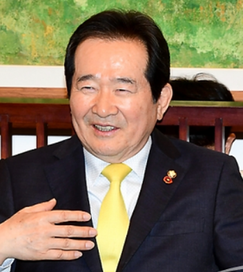
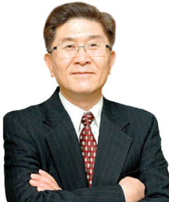

COMMITTEE
-
정 운 찬고문위원장
동반성장위원회 이사장 (2012.6 ~ )
대한민국 40대 국무총리 (2009-2010)
서울대 23대 총장 (2002-2006)
프린스톤대 경제학 박사 (1972-1976)
-
권 영 해고문위원
대한민국 통일건국회 회장 (2013.5 ~ )
21대 국가안전기획부 부장 (1994-1998)
30대 국방부 장관 (1993.2-1993.12)
육군사관학교 15기 (1955-1959)
-
황 교 안고문위원
법무법인 로고스 상임고문 변호사 (2022.6 ~ )
대한민국 44대 국무총리 (2015.6-2017.5)
63대 법무부 장관 (2013-2015)
성균관대 법학 석사 (1955-1959)
정 세 균고문위원사람사는세상 노무현재단 이사장 (2022.3 ~ )
대한민국 46대 국무총리 (2020-2021)
대한민국 20대 국회의장 (2016-2018)
경희대 경영학 박사 (2000-2004)
김 창 준고문위원김창준 미래한미재단 이사장 (2011 ~ )
미국 공화당 연방 하원의원 (1993.01.03~1999.01.03)
미국 캘리포니아주 다이아몬드바시 시장 (1991~1992)
USC, 토목공학 석사, 한양대 명예박사
정 동 수고문위원Global Unity Holdings 고문변호사
1983-86년 한미연합회(KAC) 창립 및 초대회장
1986년 Kim Chung & Lim Law Firm
1991년 민주당 제 46지구 하원의원 출마
1992년 클린턴대통령 선거캠페인 지원
1993년 12월 연방 상무부 부차관보 (국제무역담당)
Rebuild LA 이사
법률고문 윤촌 고문
2006년 2월16일 외국투자 전담기구인 대한무역투자진흥공사(KOTRA) 인베스트 코리아 단장 공채 취임
강 문 석고문위원리우헬스케어 명예회장
전 디지털오션 대표이사
전 동아제약 이사
하버드대학교 대학원 경영학 석사
스탠퍼드대학교 대학원 산업공학 석사
1948년 대한민국 정부를 수립한 이 후 한국은 세계에서 가장 개발이 안 되고 빈곤한 국가였다. 현대국가로 새로 태어난 한국에서 ‘개발’이라는 개념 자체가 없었다고 해도 과언이 아니었다.
지난 75년 동안 저개발국가에서 개발도상국의 단계를 경험하고 이제 한국은 유럽의 국가들과 같은 민주주의와 경제를 발전시키고 있다. 무엇이 한국을 이렇게 변화시켰는가?
한국은 유교주의 문화를 토대로 갖고 있다. 유교는 교육을 근간으로 하고 있다. 이러한 유교문화 토대는 경제개발의 밑거름이 되었고 '보이지 않는 손'이 되었다. 한국의 많은 대기업과 중소기업은 여전히 연구와 개발에 많은 투자를 하고 있다. 이러한 연구개발의 토대는 교육이다.
기업의 임원에게 변화하는 시대에 필요한 것은 기술개발 뿐만 아니라 학습을 통한 혁신이다.
인사이트 넥서스 연구원이 기획한 최고경영자 프로그램은 이러한 혁신에 대한 통찰력과 영감을 많은 경영자에게 제공하게 될 것이다. 그 결과는 기업의 지속 가능한 발전과, 기업의 사회에 대한 공헌, 그리고 지구 환경의 보존과 보호에 공헌으로 나타날 것을 확신한다.
고문단 위원회
After the establishment of the government of the Republic of Korea in 1948, Korea was the most underdeveloped and poorest country in the world. It was no exaggeration to say that the concept of ‘development’ itself did not exist in Korea, which was newly born as a modern country.
After experiencing the transition from an underdeveloped country to a developing country over the past 75 years, what Korea has achieved is democracy and economy like those of European countries. What changed Korea like this?
Korea has Confucian culture as its foundation. Neo-Confucianism is based on education. Confucian culture became the foundation and 'invisible hand' for economic development. Many large and small companies in Korea are still investing heavily in research and development. The foundation of this research and development is education.
What corporate executives need in a changing era is not only technological development but also innovation through learning.
The executive education programs planned by Insight Nexus Institute in collaboration with Business Schools will provide insight and inspiration for such innovation to executives. I am confident that the results will bring out the sustainable development to the companies, their contribution to society and the preservation and protection of the global environment.
Advisory Committee